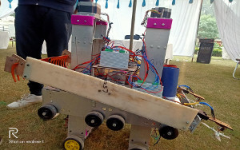
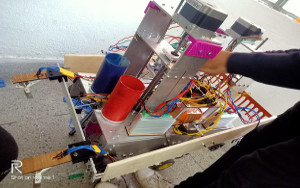

The 8th edition of Inter IIT Techmeet again offered an interesting version of the problem in the agricultural domain “DIC Terrace Farming Robot for Hilly Areas”. The ultimate goal was to stimulate thinking towards the development of tools for smallholder farmers in terrace farming where terrace steps are less than 2m in width. Such farms lack the usage of modern heavy farming equipment. Even in cases where terrace width ranged from 2-6m, mechanization is still not very popular. Coupled with steep slopes and steps of terrace farming this becomes even more challenging. The PS revolved around building a bot that could climb a step of 40 cm in size and perform agricultural operations like ploughing, sowing, and harvesting. Our team comprised of Divya Pattisapu, Nihal Barde, Dhananjay Tiwari, Srijan Bansal, Vishwajeet Bhagyawant, Dikshant Shehmar, and Athul Nambolan. The robot designed by our team used a leadscrew driven actuator to manoeuvre over the steps and had modular attachments for ploughing and harvesting tools. The mechanisms to lift the bot were driven by a pair of NEMA 34 motors. The entire structure members were fabricated from sheets by water jet and then integrated using mechanical fasteners. The local navigation was achieved by the fusion of visual odometry and estimates from the stepper movement. Also for alignment as part of navigation data from ultrasonic sensors and IMU was utilized. The entire exercise of integration of bot at TL, the train journey, debugging the code and finding the perfect flat file to repair our leadscrews in Roorkee’s hardware shops was nothing less than an adventure for the whole team!